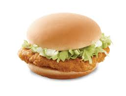

Chicken Burger Recipes

This is a delicious burger recipes
List of Ingredients :
- 4 slices whole-grain bread,thorn to chunks
- 1⁄2 cup quick-cooking oats
- 1 teaspoon salt
- 1 teaspoon dry mustard
- 1 teaspoon celery seed
- 1 teaspoon ground cumin
- 1 pound ground chicken
- 1 onion, finely chopped
- 1 egg
- 2 tablespoons canola oil
Steps :
- Process bread in a food processor until you have fine bread crumbs.
- Stir bread crumbs, oats, salt, mustard, celery seed, and cumin together in a bowl.
- Mix chicken, onion, and egg together in a seperate bowl.
- Add bread crumb mixture to chicken mixture and mix.
- Devide and shape mixture into 7 patties.
- Heat canola oil in a large skillet over medium heat.
- Cook patties in hot oil until browned on each side and no longer pink in the center (about 5 minutes per side).
- Assamble the burger and enjoy